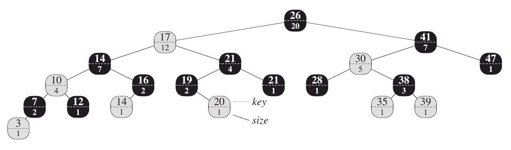
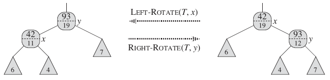
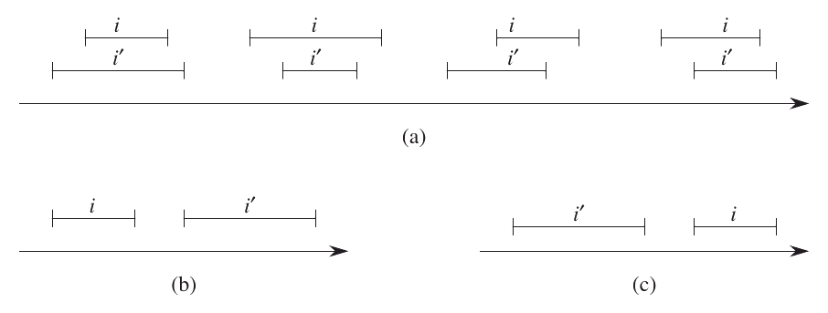
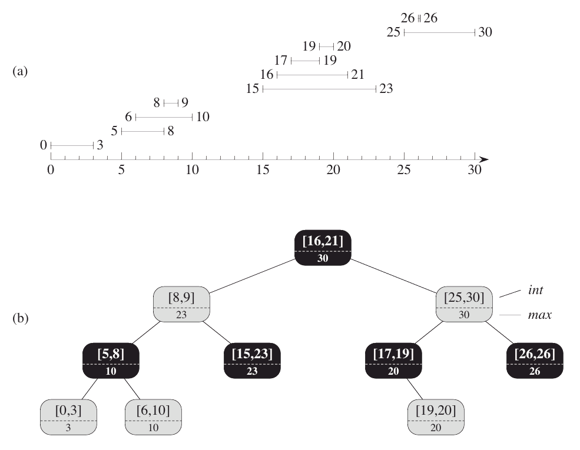

14.1 Dynamic order statistics
i번째 순서 통계량(order statistic)은 집합에서 i번째 가장 작은 키를 가진 요소를 말한다.
순위(rank) : 집합에서 선형 순서의 위치

그림 14.1 확장된 빨강-검정 나무인 순서 통계량 나무. 회색 마디는 빨강, 검은색 마디는 검정이다. 일반적인 속성 외에도 각 마디는 마디 수를 나타내는 size를 가진다.
T.nil을 0으로 두면 다음과 같은 식을 얻는다.
| x.size = x.left.size + x.right.size + 1 |
키가 중복되었을 때의 문제를 중위 운행법(inorder tree walk)으로 해결한다.
Retrieving an element with a given rank
실행시간 : O(lg n)
OS-SELECT(x,i)
1 r = x.left.size + 1
2 if i == r
3 return x
4 elseif i < r
5 return OS-SELECT(x.left, i)
6 else return OS-SELECT(x.right,i-r)
Determining the rank of an element
실행시간 : O(lg n)
OS-RANK(T,x)
1 r = x.left.size + 1
2 y = x
3 while y ≠ T.root
4 if y == y.p.right
5 r = r + y.p.left.size + 1
6 y = y.p
7 return r
Maintaining subtree sizes
부분트리 크기를 유지하기 위해서 ROTATE 함수에 다음 문장을 추가한다.
13 y.size = x.size
14 x.size = x.left.size + x.right.size + 1

그림 14.2 회전할 동안 부분 나무의 크기를 갱신하기. 회전하는 연결은 크기가 갱신될 필요가 없는 두 마디에 응집한다. 갱신은 x,y의 size와 삼각형으로 표시되는 부분 나무의 근을 필요로 하기 때문에, 갱신은 국소적이다.
삽입과 삭제에서 드는 비용이 O(1)이고 트리의 높이는 O(lg n)이므로 총 실행 시간은 O(lg n)이다.
14.2 How to augment a data structure
자료구조의 확장과정
- 근본적인 자료구조를 선택하라
- 자료구조를 유지하기 위한 추가 정보를 결정하라
- 추가 정보를 다루는 기존 연산이 문제가 없다는 것을 증명하라
- 새로운 연산을 개발하라
Augmenting red-black trees
정리 14.1 (빨강검정트리를 확장하기) n개의 노드를 가진 빨강검정트리 T를 확장하는 속성을 f라고 하자. 그리고 각 노드 x에 대한 f값은 노드 x, x.left, x.right (가능하면 x.left.f와 l.right.f도 포함)의 정보에 따라 결정된다고 가정하자. 그렇다면 삽입 또는 삭제시 T의 모든 노드에 있는 f값은 O(lg n) 시간에 영향을 주지 않는다. |
14.3 Interval trees
닫힌 구간(closed interval)
실수 [t1,t2]의 정렬된 한 쌍 (t1 ≤ t2)
구간 트리(interval tree)
각 노드 x가 구간 속성을 가지며 동적 연산이 가능한빨강검정 트리
함수
INTERVAL-INSERT(T,x)
INTERVAL-DELETE(T,x)
INTERVAL-SEARCH(T,i) // i는 구간을 뜻한다.

그림 14.3 두 개의 닫힌 구간 i와 i'에 대한 구간 삼분법 (interval trichotomy). (a) i와 i'가 겹치면, 네 개의 상황이 발생한다; 각 상황에서 i.low ≤ i'.high이고 i'.low ≤ i.high이다. (b) 구간이 겹치지 않고 i.high < i'.low이다. (c) 구간이 겹치지 않고 i'.high < i.low이다.

그림 14.4 구간 나무. (a) 10 구간으로 구성된 집합. 왼쪽 종단에서 시작해 아래에서 위로 정렬되었다. (b) (a)의 구간을 나타낸 구간 나무. 각 마디는 구간 그리고 근이 x인 부분 나무에 있는 구간 종단의 최대값을 가진다. 각각은 점선 위 아래로 표시된다. 나무의 중위 운행법은 왼쪽 종단에서 정렬된 순서에 있는 마디를 목록으로 나타낸다.
INTERVAL-SEARCH(T,i)
1 x = T.root
2 while x ≠ T.nil and i does not overlap x.int
3 if x.left ≠ T.nil and x.left.max ≥ i.low
4 x = x.left
5 else x = x.right
6 return x
정리 14.2 INTERVAL-SEARCH(T,i)은 간격이 i와 겹친 노드를 반환하거나 T.nil을 반환한다. T.nil을 반환할 때 트리 T는 i와 겹치는 노드를 가지지 않는다. |